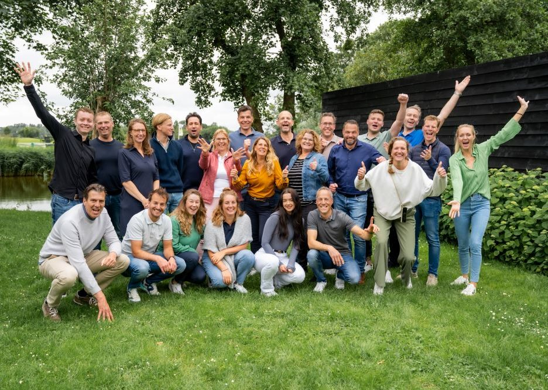

Bespaar duizenden euro's
Het verkopen van je huis hoeft niet duur te zijn. Je kan zelf de bezichtigingen doen of alles uitbesteden. Altijd voor een vast laag tarief! Kies wat bij jou past.
Wat kost het
9,1 • 7.459 beoordelingen
Gratis adviesgesprek Download brochure
De huizenprijzen stijgen licht en het gemiddeld aantal bezichtigingen per woning
neemt toe. Profiteer van de huidige woningmarkt en ons scherpe all-in tarief.
Wil je je huis prominent op funda, de kwaliteit van een NVM makelaar, zelf actief
betrokken zijn bij de verkoop en duizenden euro's aan makelaarskosten besparen?
Het verkopen van je huis hoeft niet duur te zijn. Je kan zelf de bezichtigingen doen of alles uitbesteden. Altijd voor een vast laag tarief! Kies wat bij jou past.
Wat kost het
Ons team verkoopt duizenden huizen per jaar en brengt 19 jaar kennis en ervaring mee. Wij gaan altijd voor het beste resultaat: een dik tevreden jij!
Ontmoet het team
Jouw enthousiasme en kennis van jouw huis en buurt samen met onze NVM expertise vormen de unieke combinatie. In deze 5 stappen is jouw huis zo verkocht.
Zo werkt het
Wij rekenen geen percentage van de verkoopprijs, maar een vast laag tarief van € 1.575 all-in. Vul jouw verwachte verkoopprijs in en ontdek wat je kunt besparen als je zelf de bezichtigingen doet.
Verkoopprijs
//prijs//
Vergelijkingstarief
//procent//
Je bespaart:
PRIJS
Gratis informatiegesprek Wat is mijn huis waard?Een full-service makelaar rekent gemiddeld 1,38% (bron: VEH). Welk percentage een full-service makelaar rekent kan variëren per makelaar, locatie en woningwaarde. Behalve deze courtage betaal je de makelaar ook nog vaak opstartkosten, gemiddeld € 350 tot € 750. Makelaarsland rekent een vast all-in tarief.
Stel al jouw vragen in een gratis en vrijblijvend gesprek met één van onze adviseurs.
Gratis adviesgesprek > Of download de brochure9,8
Prettig contact, goede begeleiding en advies. Krijg vast contactpersoon, maar collega's zijn erg behulpzaam als je vaste contactpersoon er even niet is.
Geschreven op 17 juni 2024
10
Top makelaardij. Kunnen best wat meer naamsbekendheid krijgen want zijn elke cent dubbel waard. Hele goede service, werd goed begeleid en op de hoogte gehouden. Werd goed overlegd en meegedacht... Lees meer
Geschreven op 11 juni 2024
9,5
Alles goed verlopen! Vooral dat ik de mensen zelf kon rondleiden was echt super. De reacties van alle mensen was dat het heel plezierig was omdat ik zelf alles over... Lees meer
Geschreven op 8 juni 2024
1647LE Berkhout
€ 235.000
66 m2, 4 kamers
1075RS Amsterdam
€ 700.000
98 m2, 4 kamers
8539SC Echtenerbrug
€ 269.000
135 m2, 4 kamers
Op zaterdag 5 oktober 2024 is de landelijke NVM Open Huizen Dag. De belangrijkste huizendag van het ja..
Ga jij je huis verkopen? Dan wil je daar natuurlijk de hoogst haalbare koopsom voor krijgen tegen de b...
Kunstmatige Intelligentie (AI) is een gamechanger voor de makelaardij. Het zorgt voor efficiëntieverb...
Ons team van makelaars en experts verkoopt duizenden huizen per jaar. Sinds onze start in 2005 hielpen wij al meer dan 57.000 klanten bij de verkoop of aankoop van hun huis. Wij staan in de startblokken om ook voor jou aan de slag te gaan.
Direct contact > Meer over ons 